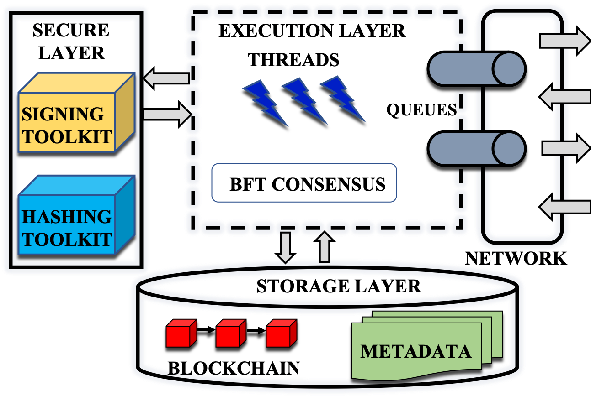

Developing on ResilientDB
~~~~~~~~~~~~~~~
ResilientDB is a high throughput permissioned blockchain fabric created by the team at startup MokaBlox and Exploratory Systems Lab at UC Davis.

Objectives of this Post. To make the reader understand the key components of ResilientDB, which will allow the reader to design our new Byzantine-Fault Tolerant (BFT) protocols in ResilientDB or add new features to the existing codebase.
Expectations from the Reader. We expect the reader to have a fair understanding of C++. Further, it is expected that the reader has created and designed parallel programs and understands concepts such as locks, memory pools, threads, transactions, and cryptographic entities (signatures and hashes).
What not is this Post. In this post, we do not cover the Practical Byzantine-Fault Tolerance (PBFT) protocol. Although PBFT lies at the core of the current version of ResilientDB, we will ensure this discussion does not dive deep into the details of PBFT.
ResilientDB Code Walk Through
~~~~~~~~~~~~~~~
Now, we try to go over ResilientDB codebase and understand different components. As ResilientDB github page provides different ways to compile and execute the code, we skip discussing those steps.
Once you have compiled the code, you will see two executables rundb and runcl. The former executable is deployed at servers while the later is used to run the client code. The starting point for rundb is main.cpp which is located in the system directory. Similarly, the starting point for runcl is client_main.cpp.
In the current version of ResilientDB, we follow the primary-backup model. In this model, one of the replicas is designated as the primary while others act as backups. We require clients to send their requests to the primary. When the primary replica receives a client request, it initiates consensus on that request. It is the task of the primary to run a consensus protocol (in our case PBFT) that ensures all the backups execute all the client requests in the same order. Further, we expect replicas to have consecutive identifiers starting from 0, that is, {0,1,2,3,….}.
Configuration Parameters
~~~~~~~~~~~~~~~
Prior to compiling ResilientDB code, each developer has to set system configuration in config.h file. A brief description for all the important parameters can be found in ResilientDB's README. A majority of these parameters are declared in system/global.h and initialized in system/global.cpp. Next, we discuss some of the parameters relevant for this post.
config.h also includes parameters that state the time to warmup (WARMUP_TIMER) and run (DONE_TIMER) the system. During the warmup, the system runs normally, that is, clients send their requests and replicas process those requests. However, no statistics are collected. One the warmup finishes, we start collecting the statistics for the time specified by DONE_TIMER. The value for these timers can be changed as per the requirement. In specific, there are several places in the codebase where we use the following check:
while(!simulation->is_done())
This condition only checks if the time specified by the DONE_TIMER has not expired. When the timer expires, then a summary of the results is outputted on the terminal. Note that ResilientDB provides summaries for each client and replica. At replicas, this summary includes a variable tput, which specifies the throughput - transactions executed per second at this replica. There are several other interesting variables in the summary. For more information on these variables have a look at statistics/stats.h.
Key Exchange
~~~~~~~~~~~~~~~
Once the executables are deployed at replicas and clients, they initialize necessary variables (in main.cpp). Next, we initiate the process of key generation and exchange. In ResilientDB, we provide support for both asymmetric and symmetric cryptographic signatures. We have employed Crypto++ libraries for providing different signature schemes. The configuration file enlists various supported signature schemes. In main.cpp (or client_main.cpp), each replica (or client) generates a signature for itself. Each replica uses the send_key() function (in system/worker_thread.cpp) to send its keys to other replicas and clients. Further, once a replica receives a key from any other replica or client, it stores it through the process_key_exchange() function in system/worker_thread.cpp.
In ResilientDB, we force clients to delay sending their requests until the end of this key exchange process. In specific, we require each replica to send a notification (message) to all the clients once it has received keys from all the other replicas and clients.
Message Types
~~~~~~~~~~~~~~~
In ResilientDB, communication among replicas and clients occurs through messages. In fact message is such a core entity that we provide a separate Message class, in file transport/message.h, to create and define new message types. This base class includes several fields and functions that helps exchange information among replicas and clients. Any new message type that you want to declare should typically inherit this base class. Further, in file system/global.h, we include an enum RemReqType that eases identifying the type of message. Hence, each new message should have an entry in this enum.
Client Queries (Requests)
~~~~~~~~~~~~~~~
In ResilientDB, after successful key exchange, clients create and send their requests. To reduce the cost of consensus, we require clients to batch their queries in a single request of type ClientQueryBatch. We allow clients to send two different types of queries:
At each client, there is a Client Thread that creates a request of type ClientQueryBatch and adds a batch of queries (BATCH_SIZE) to that request. Next, this request is sent to the primary replica. This functionality can be found in the file system/client_thread.cpp.
Multi-Threaded Deep Pipelines
~~~~~~~~~~~~~~~
In ResilientDB, to achieve high performance, we have employed a multi-threaded architecture. Further, we pipeline the tasks among the threads to allow multiple client transactions to be processed in parallel. In the current version of ResilientDB, we allow six distinct types of threads at the replicas and three different types of threads at clients. The count for each of these threads is specified in the file config.h.
Following are the different types of threads at a replica.
In ResilientDB, each thread is created in the main.cpp (or client_main.cpp), and on calling a thread's run() function, it works till the execution is not done.
Input/Output Threads
~~~~~~~~~~~~~~~
In ResilientDB, for each thread, we have defined a class that represents its functionality. For input and output threads, their respective classes (InputThread and OutputThread) are defined in system/io_thread.h. In these classes, we have also defined specific functions that are run at client or server sides.
At the server side, each input thread receives messages from the transport layer. We have implemented transport layer functionalities in file transport/transport.cpp. In specific, we employ Nanomsg sockets to achieve socket based communication among replicas and clients. The input/output threads use these transport layer functions to receive/send messages from/to other replicas or clients.
When an input thread receives a message, it simply places it into the work queue (work_queue). In case the message is from the client (type ClientQueryBatch), Input thread also assigns it a monotonically increasing identifier before placing it in the queue. The output thread works in the reverse direction. It dequeues a message from message queue (msg_queue) and then places it on the network.
Message Queues
~~~~~~~~~~~~~~~
Message queues are employed by process threads to communicate messages to output threads so that they can be sent to other replicas. In ResilientDB, each output thread has a message queue. As there can be multiple output threads, we equally divide the messages to be placed on the network between these threads. We do this division in the enqueue() function in system/msg_queue.cpp. If a message is to be sent to only one sender (such as messages of type CL_BATCH and CL_RSP), then based on the identifier of the sender, we select the output thread.
If a message has to be sent to multiple senders (such as BATCH_REQ and PBFT_PREP_MSG), then we place this message in the queues of both the output threads. By doing this we require all the output threads to divide the list of senders (dest vectors) among themselves. This division happens in the run() function of transport/msg_thread.cpp.
Furthermore, prior to enqueuing a message into the queue for an output thread, each message has to be signed. Depending on the type of the message, its sign() function is called inside the enqueue() function of system/msg_queue.cpp. Depending on the number of senders and the signature scheme, we generate required number of signatures. For example, if the client sends a message m to a replica and this m will be forwarded to other replicas, then contents of m should not be sent. Hence, we sign the message using digital signatures based on ED25519 or RSA. Note that digital signatures need to be performed only once per message and can be forwarded to anyone while Message Authentication Codes (MACs) need to be done per sender.
Transaction Managers
~~~~~~~~~~~~~~~
In ResilientDB, we associate every client query with a transaction manager of type TxnManager (in file system/txn.h). If a client sends a batch of 100 queries, then we initialize 100 transaction managers, one per query. Each transaction manager includes an object of Transaction class txn that helps to identify a transaction. This txn object includes, among other fields, an integer identifier txn_id, which is used to determine the order of execution. There are several other important fields in the TxnManager, which are required during the PBFT consensus.
We also provide functions that allow a thread to create, update and release transaction managers. In specific, the process threads call the function get_transaction_manager() of class TxnTable to create, fetch and update a transaction manager. Similarly, these threads call the function release_transaction_manager to release the memory allocated to a transaction managers. To ensure O(1) look-up, we store these transaction mangers in a data-structure that can be indexed with txn_id.
As ResilientDB opts for a multi-threaded pipelined architecture, a specific transaction manager could be concurrently accessed by two or more threads. To prevent data race, we require each thread to lock a transaction manager before accessing any of its fields. Each thread calls unset_ready function to lock the transaction manager and set_ready function to unlock the transaction manager. Both of these functions return a boolean value and only when the returned value is true, a thread should go ahead and access the fields. If the returned value is false, then the thread needs to wait. In ResilientDB, we implement this wait in two different mechanisms. The traditional form of waiting requires a thread to wait in a while(true) loop until the lock is available. Another form of waiting is to enqueue the message back in the queue and access it later. The disadvantage with the latter technique is that the enqueued message can only be accessed after all the messages ahead of it are processed.
Process Threads Queues
~~~~~~~~~~~~~~~
ResilientDB also includes several queues for process threads. The total count for these queues and their functionalities are present in system/work_queue.cpp. These queues are used by the input threads to forward incoming messages to the process threads and employed by the process threads to communicate among each other. To implement these queues, we use the lock-free data-structures available in Boost libraries.
The starting point for all the process threads is the run() function in system/worker_thread.cpp. In this function, these threads continuously check their queues for an incoming message. Once they dequeue a valid message, they start processing that message.
Batch Threads
~~~~~~~~~~~~~~~
Batch threads are only employed by the primary replica to process incoming batches of requests from clients. At backup replicas, these threads are just idle. When a batch thread finds a message of type ClientQueryBatch in its queue, it dequeues that message and calls the function process_client_batch() (in file system/worker_thread_pbft.cpp). Next, the batch thread checks if the message has a valid client signature. If this is the case, it creates a new transaction manager for all the queries in the batch (function create_and_send_batchreq() in file system/worker_thread.cpp). At this step, the batch thread also needs to generate a unique transaction identifier for each request, which it does with the help of identifier assigned by the input thread. In general, we start transaction identifiers from 0. For example, if the BATCH_SIZE = 100, then transaction identifiers are 0–99, 100–199, 200–299, and so on.
The batch thread also initializes various fields in the transaction manager. Finally, the batch thread creates a message of type BatchRequests, stores all the requests and enqueues it in the msg_queue. Note that the last step matches the first phase of the PBFT protocol where the primary sends a Pre-Prepare message to all the replicas.
Although we employ locks that prevent two or more threads to concurrently access the same transaction manager, they cause a reduction in the system throughput. Hence, a design that minimizes the use of locks is more preferable. Further, in ResilientDB, each message communicated between the replicas has an associated txn_id. For client batches, this txn_id does not matter as it is sent by the client. However, once the primary creates a BatchRequests message, these identifiers help in locating the transaction and its batch. As we require each batch to include at least 10 transactions, we use this to our advantage and assign different txn_id to different messages. Thus, the txn_id assigned to a BatchRequests message is: Maximum transaction identifier in a batch - 2. For example, if the batch size is 100, the txn_id for the corresponding BatchRequests messages would be 97, 197, 297, and so on.
Worker Thread
~~~~~~~~~~~~~~~
To both primary and backup replicas, we provide one Worker thread. This worker thread helps in processing messages related to different phases of the PBFT protocols (BatchRequests, PBFTPrepMessage and PBFTCommitMessage).
At the backup replicas, it is the worker thread, which creates and initializes the transaction managers on receiving a BatchRequests message (function process_batch() in file system/worker_thread_pbft.cpp). After processing the BatchRequests message, the backup replica creates and sends PBFTPrepMessage to all the other replicas through send_pbft_prep_msgs() function (in system/txn.cpp). When a replica receives a PBFTPrepMessage from another replica, then it processes that message in process_pbft_prep_msg() function (in system/worker_thread.cpp). Once a replica receives 2f PBFTPrepMessage messages, then it creates and sends PBFTCommitMessage through send_pbft_commit_msgs() function (in system/txn.cpp).
For both PBFTPrepMessage and PBFTCommitMessage, we set transaction identifier to the Maximum transaction identifier in a batch. For example, if the batch size is 100, the txn_id for the corresponding PBFTPrepMessage messages would be 99, 199, 299, and so on. Further, for both PBFTPrepMessage and PBFTCommitMessage, to save costs, we do not communicate the whole batch. These messages include the identifier for the first transaction, identifier for the last request, batch size and hash, which are sufficient to identify the BatchRequests message sent by the primary.
Once a replica receives 2f+1 PBFTCommitMessage messages, it is ready to execute this transaction. Hence, this replica creates an ExecuteMessage and enqueues it in the work_queue for the Execution Thread. Based on the batch information, the correct queue is selected for enqueuing. For the ExecuteMessage, we set transaction identifier to the Maximum transaction identifier in a batch -1. For example, if the batch size is 100, the txn_id for the corresponding ExecuteMessage messages would be 98, 198, 298, and so on.
Execute Thread
~~~~~~~~~~~~~~~
Despite the existence of a large number of queues for the Execute thread, we ensure that the execute thread always knows the next queue to dequeue. On receiving an ExecuteMessage, the execute thread calls the process_execute_msg() function in system/worker_thread.cpp. It executes all the transactions, commits their results, adds a block to the chain and sends a response to the client (message of type ClientResponseMessage).
Periodically, the execute thread also creates and sends checkpoints of type CheckpointMessage to all the other replicas. For the CheckpointMessage, we set transaction identifier to the Maximum transaction identifier in a batch -4. For example, if the batch size is 100, the txn_id for the corresponding ExecuteMessage messages would be 95, 195, 295, and so on.
Checkpoint Thread
~~~~~~~~~~~~~~~
The checkpoint thread is responsible for collecting all the incoming CheckpointMessage messages. Once the checkpoint thread receives 2f+1 such messages, it considers all the transactions until that checkpoint stable and releases the memory held by those transaction managers. It is possible that execute thread is lagging behind other threads. In other words, although the system has reached a checkpoint for transactions up to 500, the execute thread has only concluded executing 200 transactions. In such a case, those transaction managers should not be deleted. Hence, the checkpoint thread undergoes a more involved condition before releasing any transaction manager.